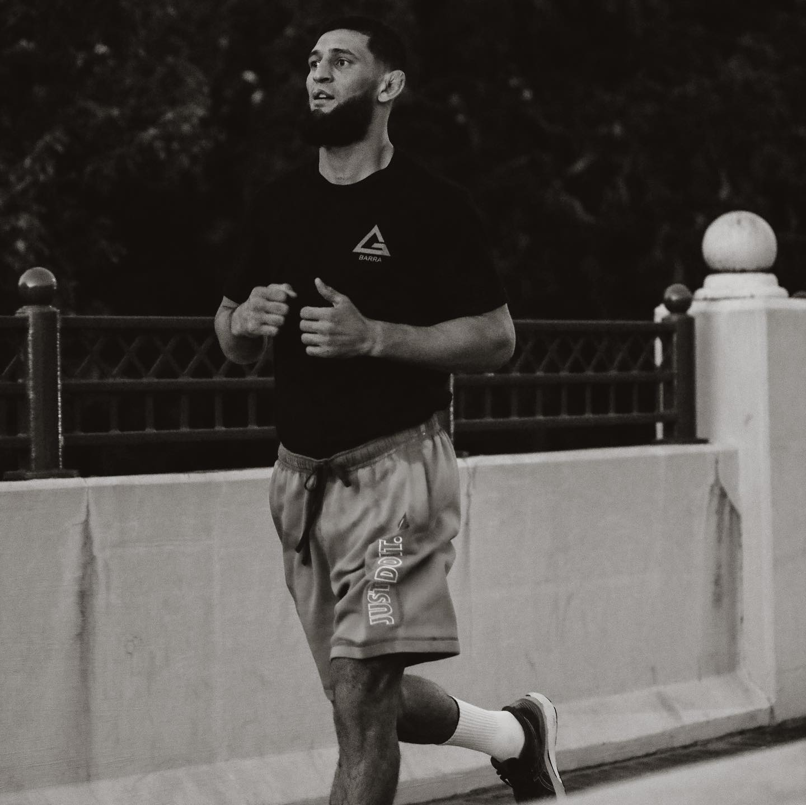

KHAMZAT
CHIMAEV
Khamzat Khizarovich Chimaev was born on 1 May 1994.
He is a Swedish professional mixed martial artist
and freestyle wrestler
Chimaev was born in the village of Gvardeyskoye in
today's Chechnya, Russia,
which at that time was the de facto independent
Chechen Republic of Ichkeria,
where he started wrestling when he was five years old.
It has been reported he won a bronze medal
at the Russian National Championships in the junior level.
In 2013, when he was 18, he immigrated
to Sweden with his mother, joining his older brother
After moving to Sweden, Chimaev wrestled at multiple clubs,
Considered one of the best freestyle wrestlers in the country,
Chimaev won a gold medal at the 2016
and 2017 Swedish Freestyle National Championships at 86
kilograms, and in 2018 he did so at 92 kilograms.
Chimaev has had a series of dominant performances in the
tournament, posting an overall record of 12-0,
which includes three pins, seven technical falls and holds a
combined score of 105 points, while only
surrendering two himself, across all of his three
showdowns. Chimaev has competed in a few judo tournaments
and in four combat sambo fights.
Chimaev first started training in MMA when he was 23 years old.
He trains at Allstar Training Center in Stockholm,
along with three-time UFC Light Heavyweight Championship challenger
Alexander Gustafsson, Ilir Latifi and Reza Madadi among others.
Between September 2017 and April 2018, Chimaev had three amateur
MMA fights.
The first of them was against future IMMAF World Champion
Khaled Laallam, whom he defeated via submission in the second round.
He won his following two amateur fights, one by submission and
one by technical knockout, completing his amateur career with a record of 3-0.
Chimaev turned professional on 26 May 2018, at International Ring Fight Arena 14,
against Gard Olve Sagen. He won the fight via technical knockout.
Chimaev's next fight took place on 18 August 2018, against Ole Magnor at
Fight Club Rush 3. He won via submission.
After having his first two professional fights in Sweden,
Chimaev signed with Middle Eastern organization Brave Combat Federation.
He won his 4 fights with the organization before signing with the UFC.
Fights 12
Wins 12
- FREESTYLE WRESTLING
- Gold,2018 Swedish Championships champion, 92 kg
- Gold,2016 Swedish Championships champion, 86 kg
- Gold,2015 Hammarslaget Championships champion, 86 kg
- Gold,2015 Swedish Championships champion, 86 kg
- Gold,2015 Lilla Mälarcupen Championships champion, 86 kg
- MMA
- BT Sport 2020 Breakthrough Fighter of the Year
- Nordic MMA Awards 2020 Male fighter of the Year
- 2020 UFC Honors Debut of the Year
- Record for fastest consecutive wins in Modern UFC history(ten days)
- Record for quickest three fight win streak in Modern UFC history(66 days)
ACCOMPLISHMENTS

BRAVE FC CAREER
After having his first two professional
fights in Sweden,
Chimaev signed with Middle Eastern
organization
Brave Combat Federation.
He was scheduled to make his promotional
debut against
Benjamin Bennett on 16 November 2018,
at Brave CF 18.However, Bennett withdrew
from the bout
and was replaced by undefeated prospect
Marko Kisič.Chimaev won the fight
Chimaev had a quick turnaround for his
next fight when he took
on Sidney Wheeler on short notice on
22 December 2018,
at Brave CF 20, replacing an injured
Leon Aliu.He won the fight.
He then fought Ikram Aliskerov on 19
April 2019, at Brave CF 23.
This was Chimaev's debut in the welterweight
division. He won the bout via knockout after
landing an uppercut
in the first round.This performance earned
him Brave's Knockout of the Night award.
His fourth promotional fight came
against Mzwandile Hlongwa
on 4 October 2019, at Brave CF 27.
Chimaev won the fight via
submission in the second round.
Chimaev was expected to challenge Jarrah
Al-Selawe for the BCF
Welterweight Championship on 18 April 2020,
at Brave CF 37, which would be the promotions
first event in Chimaev's
hometown of Stockholm, Sweden.
However, the event would be postponed due
to the COVID-19 pandemic
and the matchup was cancelled altogether
when Chimaev signed with the UFC instead.
UFC CAREER
Chimaev made his promotional debut in a
middleweight bout against
John Phillips, replacing Duško Todorović,
on 16 July 2020, at UFC on ESPN 13.He won
the fight via submission
in the second round.This win earned him
the Performance of the Night award.
Ten days after the fight against Phillips,
Chimaev faced promotional newcomer
Rhys McKee at welterweight on 25 July 2020,
at UFC on ESPN 14.He won the fight via
technical knockout in the first round.
It was reported on 6 September 2020, that
Chimaev would have another quick
turnaround as he was booked to face
Gerald Meerschaert
on 19 September 2020, at UFC Fight Night 178.
He won the fight against
Meerschaert via knockout just 17 seconds
into round one.
This win earned him his third straight
Performance of the Night award.
Chimaev was scheduled to face Leon Edwards
in the main event of
UFC Fight Night 183 on 19 December 2020.
In between, Chimaev was added to the UFC
welterweight rankings, entering
at 15.On 29 November, it was announced that
Chimaev had tested positive for COVID-19,
and the bout was declared to be
in jeopardy.On 1 December, Edwards
also tested positive
for COVID-19 and the bout was subsequently
postponed.On 22 December, it was
announced that the bout was rescheduled
for 20 January 2021,
at UFC Fight Night 185. Subsequently,
Chimaev pulled out of the contest on
29 December due to his own COVID-19 recovery.
As a result, the bout was momentarily cancelled.
The pair was rescheduled
once again to headline UFC Fight Night 187,
on 13 March. However, on 11 February,
UFC president Dana White announced the fight was
once again cancelled due to
Chimaev suffering from lingering effects of COVID-19.
On 1 March 2021, he announced on Instagram
that he was retiring from
the sport due to lung complications
caused by COVID-19.
Dana White later came out and said Chimaev
was not retired and was just
emotional after experiencing effects
of prednisone for
his lungs during a training session.
Chimaev returned to face Li Jingliang on
30 October 2021, at UFC 267.
He won the bout via technical submission, choking
Jingliang unconscious with a rear-naked choke
in round one.
This win earned him his fourth
straight Performance of the Night award.
Chimaev faced Gilbert Burns at UFC 273
on 9 April 2022. Chimaev won the
fight via unanimous decision.
The fight was awarded the
Fight of the Night award. The fight
also earned him first place in the
Crypto.com Fan Bonus of the Night award.
Chimaev was scheduled to face Nate Diaz
on 10 September 2022 in the
main event of UFC 279. At the weigh-ins,
Chimaev weighed in at 178.5 pounds,
seven and a half pounds over the
welterweight non-title fight limit.
As a result of missing weight, Chimaev
was removed from his main event bout
with Diaz, and instead faced Kevin Holland
in the co-main event at
a 180-pound catchweight bout. Holland was
already set for a 180-pound catchweight bout
against Daniel Rodriguez on the card.
Chimaev won the bout via D'Arce Choke in the first round.